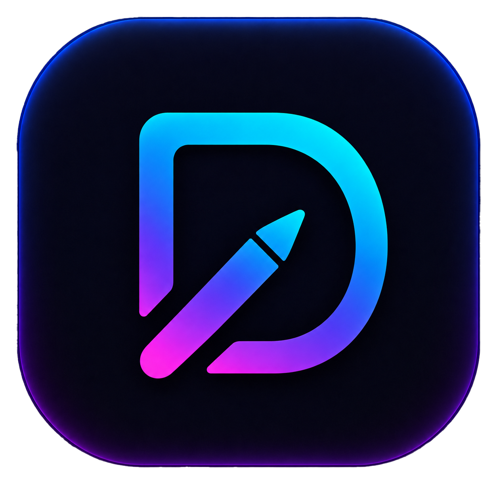

DrawSplayHOST CONTROL CENTER
Dark mode
HOST OVERVIEW
Checking status…
CONFIGURATION
Host settings
Tune display, input, and connection behavior.
HOST CONTROLS
Actions & tools
SYSTEM HEALTH
Setup checklist
Checking setup…
STARTUP
Login service
…
Detecting platform and session…
LIVE SESSION
Session controls
Manage the active client session without stopping the host.
Lock client input
Client display preference
Clears the connected client's saved resolution preference. The default resolution is used on the next reconnect.
SUPPORT
Diagnostics
Download a JSON snapshot for troubleshooting and compatibility checks.
WINDOWS
Parsec VDD custom resolutions
If custom VDD resolutions fail because HKLM is protected, run this one-time admin setup and approve UAC once.
INPUT
Pen calibration
Applies only to the currently connected client. Single-client mode is enforced on the host.
Stop host
Ends streaming and exits the host process.